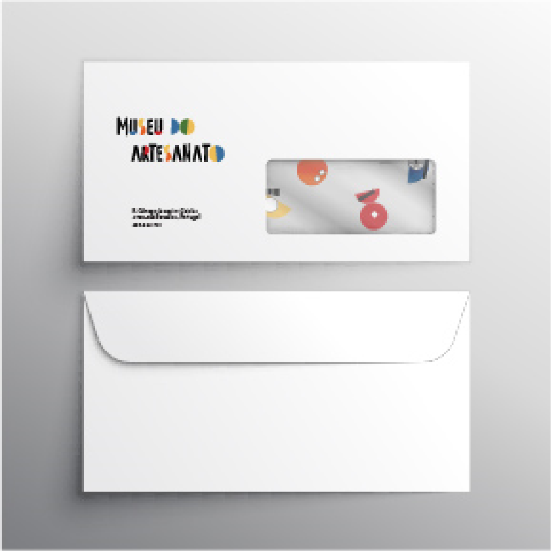
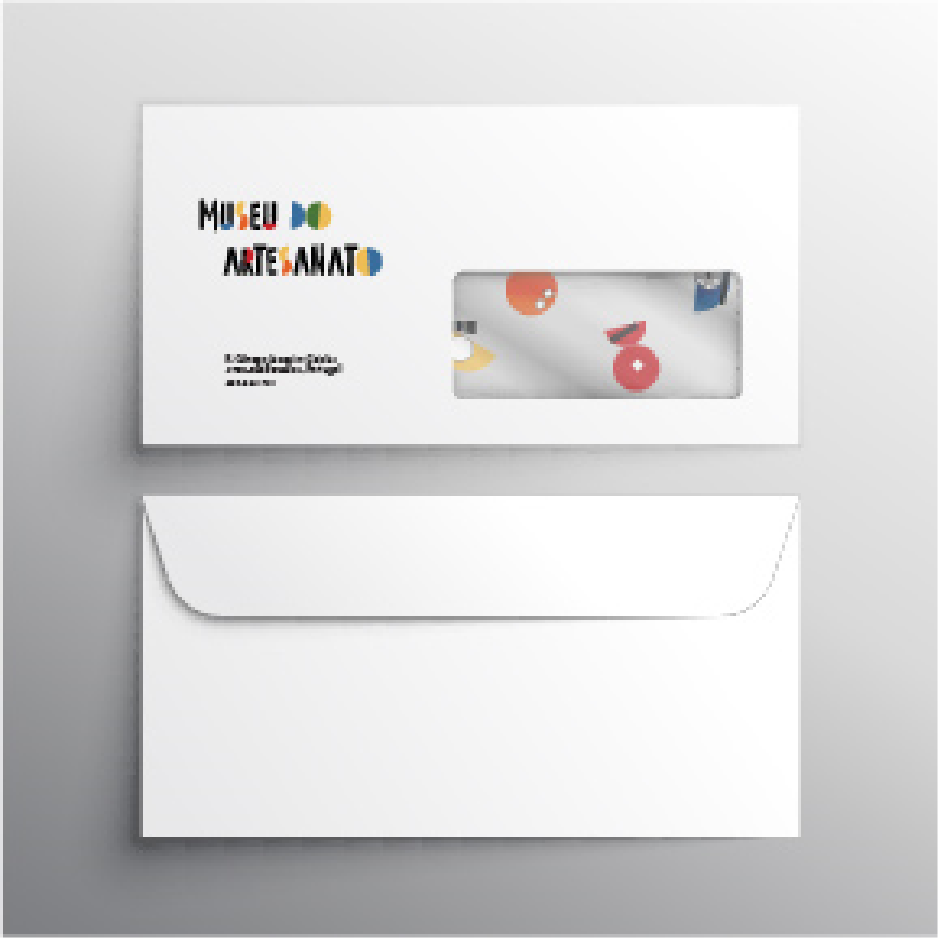

Este proyecto consistió en reestructurar la identidad de una Institución - El Museo de la Cerámica. La propuesta se dividió en fases, entre las cuales, la investigación, las referencias, el concepto y la elaboración. La primera fase consistió en conocer la institución y sus objetivos. De ahí que se entendiera que el Museo pretende mantener viva la artesanía barcelense, así como la Nacional, a través de su difusión. Comprender cómo otras entidades de este tipo difunden y cumplen sus objetivos es fundamental para los términos de referencia. Otra fase importante fue el concepto. La pregunta que surgió para llegar a él fue: ¿Qué profesiones / culturas existen con hábitos idénticos a los que ejercen esta profesión? Las tribus. Ambos elaboran vajilla para el día a día y ambos hacen figuras tanto para fiestas como para juegos infantiles. Uniendo a la tribu con la importancia que el Museo de la Cerámica le da al Artesano, se definió el concepto. Tribu / Artesano.
<
Para la elaboración de la marca, era necesario conocer el trabajo de cada artesano barcelense y de los artesanos en general y, a partir de ahí, desarrollar una ilustración para cada familia. El objetivo era crear el mismo lenguaje para cada ilustración, de ahí la repetición de los círculos, la mitad del círculo y un guión. A partir de estas formas se creó la marca.

Los colores elegidos fueron influenciados por los colores de la Cerámica y el Figurativo. El formato manual fue influenciado por la firma del artesano en la pieza de arcilla. Se ha cambiado el nombre de la institución. La artesanía abarca tanto la alfarería (vajilla) como la figurativa (piezas que se relacionan con la vida cotidiana / sátiras).
 



La placa de la Institución fue desarrollada para dar a conocer el Museo, pero también para cautivar al público objetivo. Este medio de comunicación fue desarrollado para que puedas ingresarlo En el interior hay frases del portugués popular, pero modificadas para el contexto de la artesanía. "Foram muitas anos a virar Galos."(Han pasado muchos años para convertirnos en gallos.) "Agora vou pintar o Diabo." (Ahora voy a pintar al diablo.) Frases como esta estarían dentro del edificio para retratar un poco del día a día de esta rica profesión que es el Artesano.